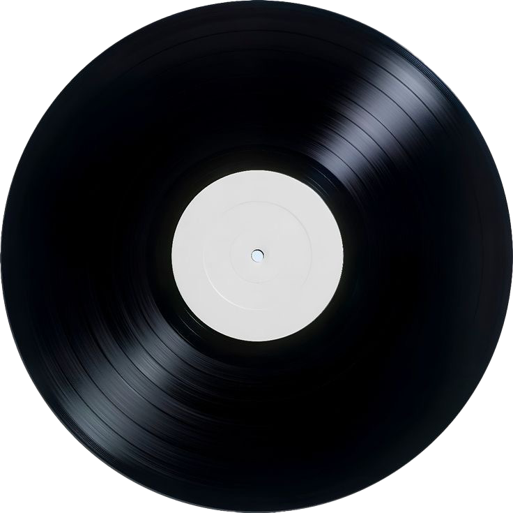

Music has always been a huge part of my life, and something that is very important to me. Growing up in Nashville, I was always listening to, watching, or playing music of some kind. It is a huge part of my day to day life, and whatever I'm doing, whether its homework, folding laundry, driving, making dinner, etc, there is always music in the background. And while I love to explore new music and expand my music taste, there are a handful of albums that I will always come back to. Click the spinning record to see my favorite "no skip" albums!